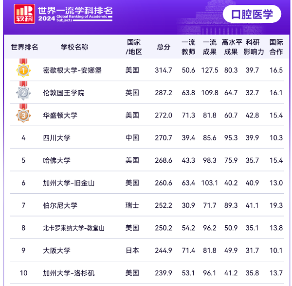

学院通知 · 科研创新
四川大学华西口腔医学荣获2024年度软科世界一流学科排名世界第四、中国第一
发布时间：2024/11/11
2024年11月11日，高等教育评价专业机构软科正式发布2024“软科世界一流学科排名”（ShanghaiRanking's Global Ranking of Academic Subjects）。2024年排名覆盖55个学科，涉及理学、工学、生命科学、医学和社会科学五大领域。此次排名的对象为全球3000余所大学，共有来自96个国家和地区的1900余所高校最终出现在各个学科的榜单上。四川大学口腔医学获得270.7总分，位列世界第四、中国第一。 世界一流学科排名更新了指标体系，包含五个一级指标，9个二级指标。一级指标包含世界一流教师、世界一流成果、高水平研究成果、科研影响力、国际合作五大指标，二级指标包含获权威奖项教师（Laureate）、高被引科学家（HCR）、国际期刊主编（Editor）、国际学术组织负责人（Leadership）、顶尖期刊论文（TJ）、国际权威奖项（Award）、重要期刊论文（Q1）、论文标准化影响力（CNCI）和国际合作论文比例（IC）九个指标。 华西口腔始终坚持全球视野和一流标准，在人才培养、师资队伍、科学研究、医疗服务等方面不断创新，持续提升引领力、竞争力和影响力，助力四川大学华西医学整体率先迈入世界一流。
